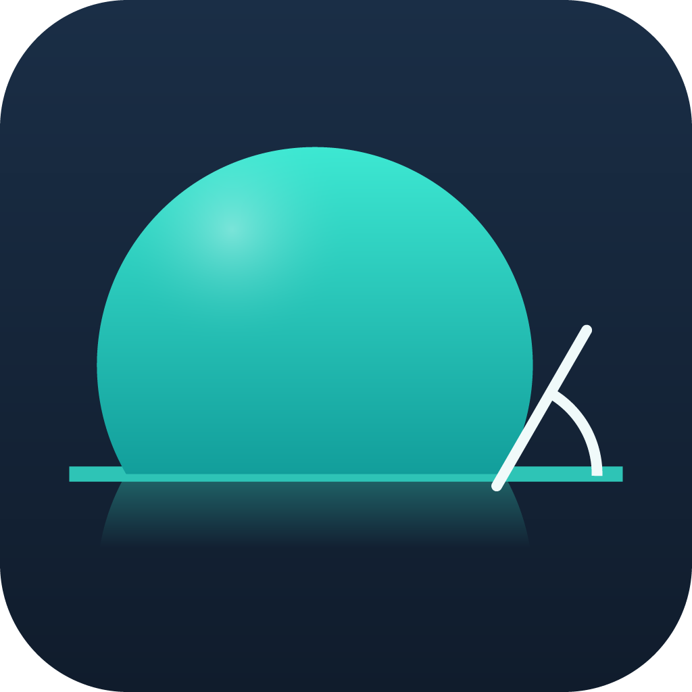
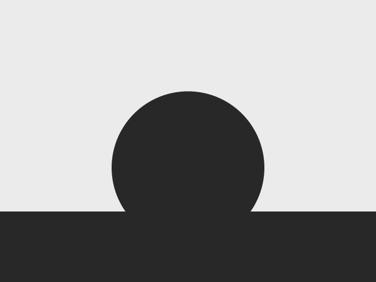
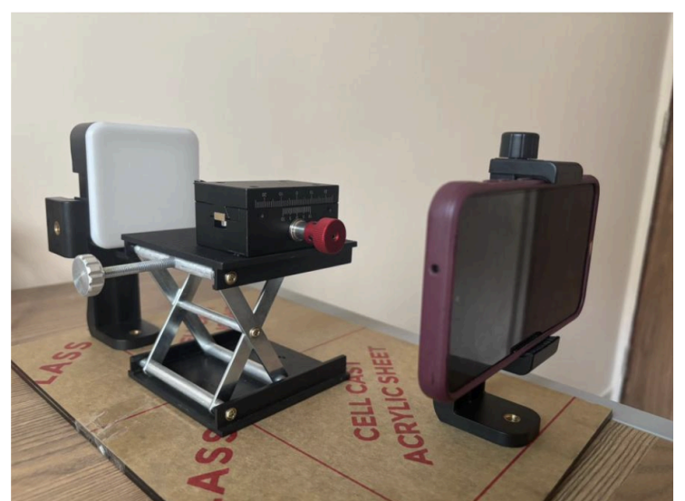
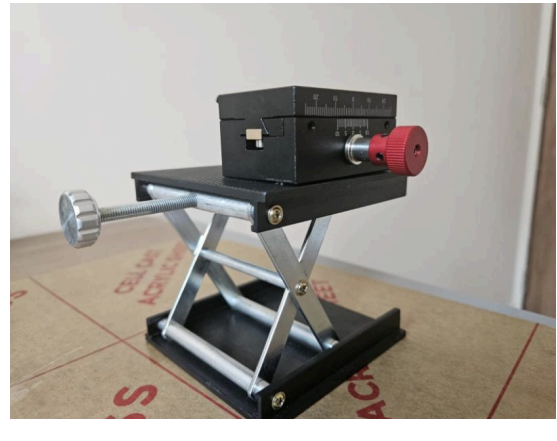
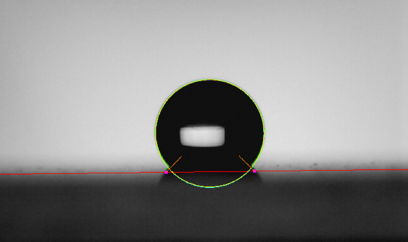
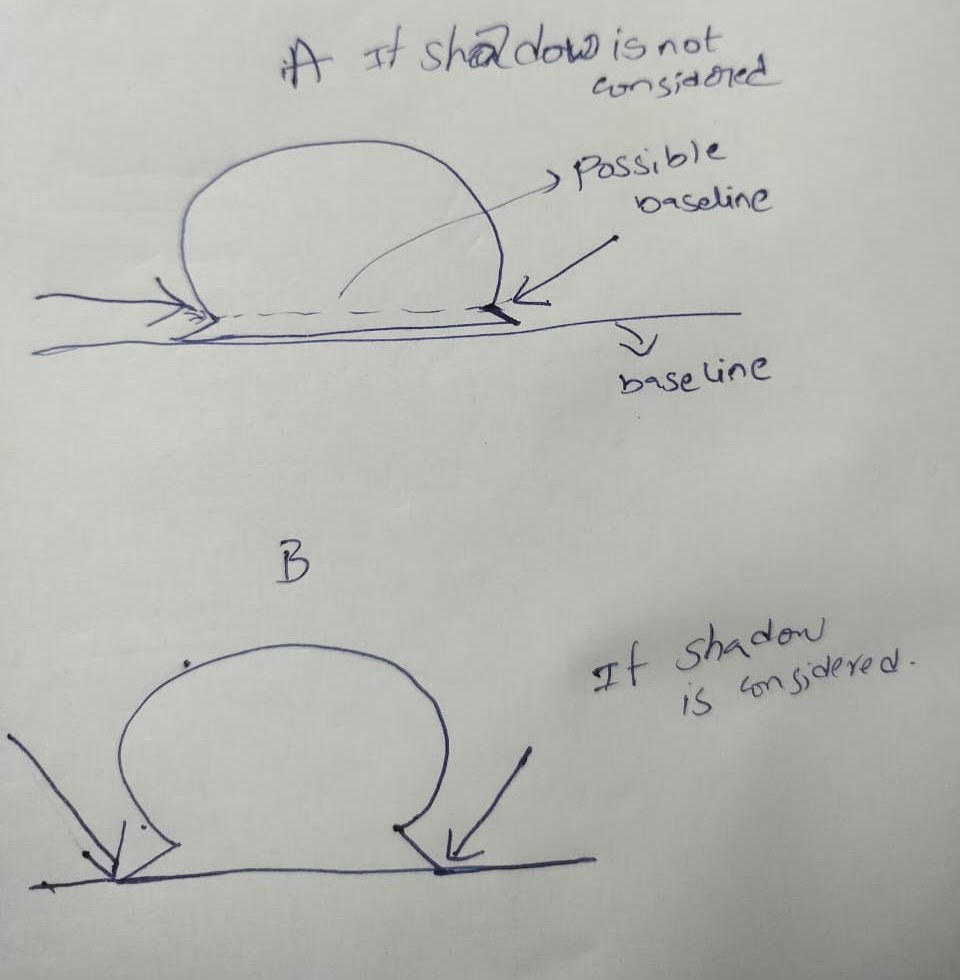
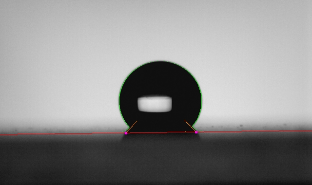
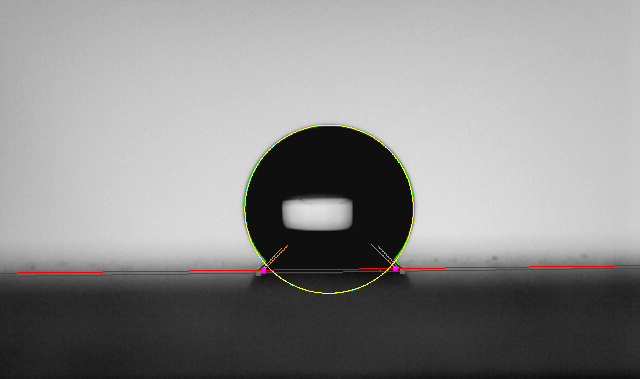

Scientific-precision contact-angle metrology on a smartphone —
designed, built, and quantitatively validated
Yennampelly Uday Kiran
22B2509
Guide: Prof. Sudhanshu Mallick
IIT Bombay · July 2026

Goal: laboratory-defensible static contact angles — with propagated uncertainty and quality flags, not just a number — fully on-device.
Young's equation — force balance at the three-phase line:
γSV − γSL = γLV cos θ
Young–Laplace (Bashforth–Adams form) — the equilibrium drop profile, arc length s scaled by apex radius b:
dφ/ds = 2 − βz − sin φ / x, β = Δρ g b²/γ

The measurement image: a back-lit drop silhouette on its substrate (synthetic 125° cap — angle known exactly, used for validation).
Published error analysis of goniometry (Vuckovac et al., Soft Matter 2019):
Design rules adopted:
Error budget of optical goniometry
| Source | Mechanism | Mitigation here |
|---|---|---|
| Baseline placement | dominant; dθ/dh = 1/(r sinθ) | 4-detector hierarchy, §baseline |
| Stage / camera tilt | parallax, skewed baseline | live level badge; tilt fit |
| Highlight clipping | blooming eats the 50% edge | −1 EV bias + capture QC |
| Autofocus drift | magnification change | tap-to-lock focus |
| Edge quantisation | ±0.5 px integer edges | sub-pixel 50% crossing |
| Model bias | circle ≠ flattened drop | ensemble + full ADSA |
Hardware (fabricated, ≈ ₹18,000)
Software
Analysis pipeline


Left: complete integrated setup — LED back-light, sample stage, smartphone mount on an acrylic base. Right: fabricated sample stage — scissor lift (Z) with micrometer translation stage (X).
Post-capture quality control (automatic)
Why it matters: every item maps 1-to-1 onto an entry in the error budget of slide 4 — geometry and exposure faults are cheaper to prevent at capture than to correct in software.
Why not Canny/Sobel? The dark drop merges into the dark substrate (no edge exists between them); the interior refraction window creates strong false edges.
Approach — use the one reliable contrast (bright field vs dark object):
Sub-pixel localisation
For an anti-aliased edge, the true boundary lies exactly at the 50%-coverage intensity crossing between local background and object levels. Every horizontal edge point and every baseline point is refined to this crossing — integer edges cap accuracy at ±0.5 px, worth ≈0.5° on small drops since dθ ≈ σbaseline/a.
All fits then operate in the baseline-aligned frame (true rotation), with left and right angles computed independently and tilt-corrected — the practice of every reference instrument.
| Detector | Substrate regime | Signal | Origin of the idea |
|---|---|---|---|
| Matte band clustering | dark matte stage (our rig) | per-column first-dark rows cluster at the surface; robust line fit + flank-support test | classical |
| Specular mirror symmetry | mirror stages (Si, metal) | drop + reflection form a blob symmetric about the surface; sub-pixel symmetry axis + waist test | DropSnake (Stalder 2006) |
| Glossy step detection | mid-gray glossy (Teflon), camera pitched down | bright→mid-gray plateau-midpoint crossing on object-free flank columns; first sustained step from top | this work |
| Junction corner refine | reflective — contact below the visible horizon | corner of each flank's outermost-x trace (V for θ<90°, waist for θ>90°); two-segment fits, sub-pixel intersection → baseline and tilt | Krüss ADVANCE · Dropometer · DE10214439A1 |
Arbitration, validated on real failures: a flank-supported matte line is only overridden by a corner-confirmed junction; an unconfirmed horizon loses to any matte line below it; weak fallbacks may never overrule a supported matte line (a circle is locally mirror-symmetric about its equator).
Auditability: every result records which detector fired (baseline_method) and the fitted tilt.
Circle Algebraic LS + geometric R². Exact at β→0. Gate fixed so hydrophilic caps (centre below baseline — correct geometry) are accepted.
Ellipse Halir–Flusser stable direct conic fit; correct eigenvector via full 3×3 characteristic cubic; analytic tangents at the baseline.
Tangent Polynomial fit in a frame rotated to the local tangent (weighted PCA): the profile is single-valued at any θ — removes the −5° steep-flank fold bias of image-frame fitting at 145°.
Young–Laplace (ADSA) the physical reference method:
A near-perfect ADSA fit anchors the ensemble; otherwise methods are combined with quality weights, Tukey outlier moderation and leave-one-out consistency.
Five terms, combined in quadrature:
| Term | Estimator |
|---|---|
| Contour sampling | moving-block bootstrap (blocks ≈ √n preserve edge-noise correlation) |
| Method disagreement | 1.4826 × MAD of valid methods |
| Edge localisation | near-contact residual spread / radius |
| Contact confidence | calibrated penalty map |
| Baseline placement | σbaseline × dθ/dh (exact, below) |
dθ/dh = 1/(r·sin θ) = 1/a → reproduces the published 0.5°/px plateau and the θ→180° blow-up
ISO-style quality flags on the result card
The result card also reports per-method angles, acceptance/rejection reasons, and the baseline detector used — the measurement is auditable, not a black box.
Tier 1 — exact synthetic truth. Laboratory references are themselves fits; only synthetics give exact θ. 8×8-supersampled caps, 60–145°, plus noise / tilt / blur / small-drop / shadow stress.
Tier 2 — laboratory reference. 12 PFOTES-coated drops vs LB-ADSA (ImageJ) fits performed in the lab.
Tier 3 — external dataset. Published DropletLab Teflon set: needles, glossy substrate, faint reflections — deliberately adversarial.
Why this matters:
| Stress case | θ true | |err| |
|---|---|---|
| Noise σ=8 | 125° | 0.12° |
| Stage tilt +5° | 120° | 0.08° |
| Small drop R=65 px | 140° | 0.32° |
| Defocus blur r=3 | 140° | 0.21° |
| Contact shadow | 150° | 0.31° |
| Contact shadow | 135° | 0.03° |
12 stress cases, MAE 0.135°, max 0.32°. The +5° tilt case cost 1.76° before the tilted-baseline contour completion — now 0.08°.

Annotated output: contour (green), baseline (red), contacts (magenta), fitted models.
DropletLab Teflon set: dispensing needles, mid-gray glossy substrate, downward camera (visible horizon = substrate's far edge, not the contact line), faint reflections, burned-in annotations. 16 transcribed reference angles.
Fixes: glossy step detector · junction-corner refinement · component-selector correction · ADSA degeneracy gate — zero change to Tiers 1–2.
| Liquid | n | MAE | Max |
|---|---|---|---|
| DI water | 7 | 7.4° | 18.6° |
| Ethylene glycol | 4 | 2.1° | 5.6° |
| Glycerol | 5 | 11.4° | 20.7° |
| Overall | 16 | 7.3° | — |
References are themselves polynomial fits on needle-distorted drops (their own L–R asymmetry up to 16°) — 7.3° bounds the combined disagreement of both methods.

Our working sketch: Case A — shadow not considered, a “possible baseline” appears above the true one; Case B — shadow considered, drop + shadow form wedges at the contacts.
The mechanism. Under the drop's overhang the back-light is blocked: the drop, its shadow and its reflection merge into one dark region. Two candidate baselines appear — the true contact plane, and the shadow/reflection boundary below it. At ≈0.5–1° per pixel (slide 4), picking the wrong one costs tens of degrees.
Methods we applied to solve it:


Left: rig capture — a dark wedge forms under the drop's overhang between the contacts. Right: pipeline result — baseline (red) on the substrate horizon, contacts (magenta) at the wedge apexes.
Future work
Questions welcome — every number in this talk is reproducible from the project's automated validation suite.
Key references: Young, Phil. Trans. R. Soc. 95 (1805) · Bashforth & Adams (1883) · Rotenberg, Boruvka & Neumann, JCIS 93 (1983) · Hoorfar & Neumann, Adv. Colloid Interface Sci. 121 (2006) · Stalder et al., Colloids Surf. A 286 (2006) & 364 (2010) · Yang, Yu & Zuo, Langmuir 33 (2017) · Vuckovac et al., Soft Matter 15 (2019) · Huhtamäki et al., Nat. Protoc. 13 (2018) · Nurmi et al., Soft Matter 21 (2025) · Chen, Muros-Cobos & Amirfazli, Rev. Sci. Instrum. 89 (2018) · Albert et al., ACS Omega 4 (2019) · ISO 19403-2:2024 · Otsu, IEEE TSMC 9 (1979) · Halíř & Flusser, WSCG (1998) · Nelder & Mead, Comput. J. 7 (1965) · Berry et al., JCIS 454 (2015) · DropletLab dataset (CC-BY)
Yennampelly Uday Kiran · 22B2509 · Guide: Prof. Sudhanshu Mallick · Dept. of MEMS, IIT Bombay